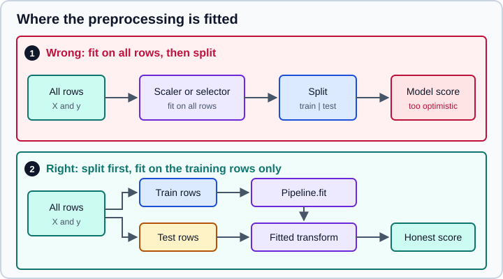

Feature Engineering
|
This content was generated with the assistance of AI and should be verified against the official documentation before being relied on in production. |
Examples target Python 3.13 or 3.14. This page targets pandas 3.1, NumPy 2.5 and scikit-learn 1.9, and it was checked in October 2026. Every Python example was run on Python 3.13.18, NumPy 2.5.4, pandas 3.1.0 and scikit-learn 1.9.1.
A model sees numbers, and it sees only the numbers you give it. Feature engineering is the work of turning raw columns (categories, dates, text, skewed amounts, gaps) into numeric inputs that carry the signal and that the chosen algorithm can use. Better features usually help more than a more elaborate model. They are also where the most common evaluation mistake happens, because every learned preprocessing step is a model of its own and must be fitted on training data only.
The page covers the transformations, then the leakage rules that govern all of them. The estimator API itself (fit, transform, predict) is explained in the scikit-learn section, the data frame side of cleaning on Data Cleaning & Preparation, and how to measure whether a feature helped on Model Evaluation & Validation. The concepts that frame all of this (supervised learning, baselines, overfitting) are on Machine Learning Fundamentals.
The rule that governs everything: fit on training data only
Almost every transformer in scikit-learn learns something in fit: a mean and a standard deviation, the list of categories, the median used to fill gaps, the features a selector keeps. If that learning sees the test rows, information from the test set leaks into the model and the evaluation score is too optimistic. The scikit-learn "Common pitfalls and recommended practices" guide states the rule directly: split before any preprocessing, never fit a transformer on test data, and keep every preprocessing step inside a Pipeline so that cross-validation and search refit it on each training fold.

Original drawing following the guidance in the scikit-learn common pitfalls page.
The effect can be large. In the following experiment the features are pure noise and the labels are random, so the only honest accuracy is about 0.5. Selecting the 20 "best" of 5,000 features on all the data before cross-validation produces a score that looks good, because the selector has already seen the labels of every validation fold.
import numpy as np
from sklearn.feature_selection import SelectKBest, f_classif
from sklearn.linear_model import LogisticRegression
from sklearn.model_selection import cross_val_score
from sklearn.pipeline import make_pipeline
rng = np.random.default_rng(0)
X = rng.normal(size=(100, 5000)) # pure noise
y = rng.integers(0, 2, size=100) # random labels: the honest accuracy is about 0.5
# Wrong: select features on ALL the data, then cross-validate
X_sel = SelectKBest(f_classif, k=20).fit_transform(X, y)
wrong = cross_val_score(LogisticRegression(), X_sel, y, cv=5).mean()
# Right: selection is a step of the pipeline, refitted inside every fold
pipe = make_pipeline(SelectKBest(f_classif, k=20), LogisticRegression())
right = cross_val_score(pipe, X, y, cv=5).mean()
print(f"selection outside CV: {wrong:.2f}")
print(f"selection inside CV: {right:.2f}")Output:
selection outside CV: 0.85 selection inside CV: 0.48
Other forms of leakage are about the data rather than the code, and no pipeline fixes them:
-
A feature that encodes the target. A column computed after the outcome is known (a refund flag when predicting fraud, a discharge code when predicting a diagnosis) makes the model look excellent and useless.
-
Duplicates and near-duplicates across the split. The same customer, patient or document in both train and test inflates the score. Use
GroupKFoldorGroupShuffleSplitwith a group identifier. -
Time. For forecasting, a random split lets the model train on the future. Split by time and use
TimeSeriesSplitfor cross-validation. -
Features built from the whole data set, such as a rolling mean or a per-customer average computed over all dates, include test-period information. Compute them from past data only.
The shape of a preprocessing pipeline
Real tables mix numeric, categorical and ordinal columns, and each kind needs different steps. ColumnTransformer applies a different transformer to each group of columns and concatenates the results; a Pipeline chains steps so imputing and scaling happen in order. Nesting them gives one object that you fit on the training data and call on anything else.
import pandas as pd
from sklearn.compose import ColumnTransformer
from sklearn.impute import SimpleImputer
from sklearn.pipeline import make_pipeline
from sklearn.preprocessing import OneHotEncoder, OrdinalEncoder, StandardScaler
df = pd.DataFrame({
"age": [34, 51, None, 28, 45, 39],
"income": [42_000, 88_000, 61_000, None, 120_000, 55_000],
"city": ["Madrid", "Lyon", "Madrid", "Turin", None, "Lyon"],
"plan": ["basic", "pro", "basic", "enterprise", "pro", "basic"],
})
numeric = make_pipeline(SimpleImputer(strategy="median"), StandardScaler())
nominal = make_pipeline(
SimpleImputer(strategy="constant", fill_value="missing"),
OneHotEncoder(handle_unknown="ignore", sparse_output=False),
)
ordinal = OrdinalEncoder(categories=[["basic", "pro", "enterprise"]])
pre = ColumnTransformer(
[
("num", numeric, ["age", "income"]),
("city", nominal, ["city"]),
("plan", ordinal, ["plan"]),
],
verbose_feature_names_out=False,
).set_output(transform="pandas")
out = pre.fit_transform(df)
print(out.round(2).to_string())
print(list(pre.get_feature_names_out()))
new = pd.DataFrame({"age": [30], "income": [50_000], "city": ["Oslo"], "plan": ["pro"]})
print(pre.transform(new).round(2).to_string())Output:
age income city_Lyon city_Madrid city_Turin city_missing plan
0 -0.72 -1.13 0.0 1.0 0.0 0.0 0.0
1 1.58 0.65 1.0 0.0 0.0 0.0 1.0
2 -0.05 -0.39 0.0 1.0 0.0 0.0 0.0
3 -1.54 -0.39 0.0 0.0 1.0 0.0 2.0
4 0.77 1.89 0.0 0.0 0.0 1.0 1.0
5 -0.05 -0.63 1.0 0.0 0.0 0.0 0.0
['age', 'income', 'city_Lyon', 'city_Madrid', 'city_Turin', 'city_missing', 'plan']
age income city_Lyon city_Madrid city_Turin city_missing plan
0 -1.27 -0.82 0.0 0.0 0.0 0.0 1.0
Points worth noting in this example:
-
The unseen city "Oslo" in the new row becomes all zeros because of
handle_unknown="ignore". The default ishandle_unknown="error", which is the right choice during development and the wrong one in production. -
set_output(transform="pandas")makes the transformer return a data frame with column names, andget_feature_names_out()returns the names for any fitted step. Both replace the pre-1.0get_feature_names, which no longer exists. See pandas & polars Output. -
OneHotEncoder(sparse_output=False)returns a dense array. The old argument wassparse=, which was renamed in 1.2 and removed in 1.4. Leave the default (a sparse matrix) when there are many categories. -
ColumnTransformerdrops columns it is not told about (remainder="drop"). Useremainder="passthrough"to keep them, or list them explicitly. -
Columns can be chosen by dtype with
make_column_selector. Under pandas 3.1,make_column_selector(dtype_include=object)still selects the pandas 3strcolumns, but it emits aPandas4Warningsaying that includingstrcolumns whenobjectis requested is deprecated and will be removed in a future version. Passdtype_include=["object", "string"](which also covers the nullablestringdtype under pandas 2) ordtype_include="str"instead; neither warns.
The full treatment of pipelines and column transformers is on Pipelines and ColumnTransformer & Heterogeneous Data.
Scaling and transforming numeric features
Scaling matters for any algorithm that uses distances or gradients: k-nearest neighbours, SVMs, k-means, PCA, regularised linear models and neural networks. Tree-based models are invariant to monotonic rescaling of a single feature and do not need it.
The effect is easy to see. On the wine data set, the features have very different ranges (proline is in the hundreds, hue below two), so unscaled distances are dominated by one column.
from sklearn.datasets import load_wine
from sklearn.model_selection import cross_val_score
from sklearn.neighbors import KNeighborsClassifier
from sklearn.pipeline import make_pipeline
from sklearn.preprocessing import StandardScaler
X, y = load_wine(return_X_y=True)
raw = cross_val_score(KNeighborsClassifier(), X, y, cv=5).mean()
scaled = cross_val_score(make_pipeline(StandardScaler(), KNeighborsClassifier()), X, y, cv=5).mean()
print(f"kNN, raw features: {raw:.3f}")
print(f"kNN, scaled features: {scaled:.3f}")Output:
kNN, raw features: 0.691 kNN, scaled features: 0.949
Source: scikit-learn: Preprocessing data
The choice of scaler depends on the distribution and on outliers.
| Transformer | What it does | Use when |
|---|---|---|
|
Subtracts the mean and divides by the standard deviation. |
Roughly symmetric features, no extreme outliers. The default choice for linear models, SVMs and PCA. |
|
Rescales to a range, by default 0 to 1. |
A bounded range is required (some neural network inputs, image pixels). Very sensitive to outliers. |
|
Divides by the largest absolute value, keeping zeros at zero. |
Sparse data, where centring would destroy sparsity. |
|
Subtracts the median and divides by the interquartile range. |
Features with outliers that should not control the scale. |
|
A monotonic transform (Yeo-Johnson, or Box-Cox for strictly positive data) that makes the distribution closer to Gaussian. |
Skewed positive or mixed-sign features, for models that assume a roughly normal input. |
|
Maps values to their rank, to a uniform or normal distribution. |
Heavy tails and unusual distributions, accepting that distances between values are no longer preserved. |
|
Rescales each row (not column) to unit norm. |
Text or other vectors where the direction matters, not the length. |
A single outlier shows how the scalers differ:
import numpy as np
from sklearn.preprocessing import (StandardScaler, MinMaxScaler, RobustScaler,
PowerTransformer, QuantileTransformer)
x = np.array([[1.0], [2.0], [3.0], [4.0], [5.0], [100.0]])
for scaler in [StandardScaler(), MinMaxScaler(), RobustScaler(),
PowerTransformer(), QuantileTransformer(n_quantiles=6)]:
print(f"{type(scaler).__name__:20s}", scaler.fit_transform(x).ravel().round(2))Output:
StandardScaler [-0.5 -0.47 -0.45 -0.42 -0.39 2.23] MinMaxScaler [0. 0.01 0.02 0.03 0.04 1. ] RobustScaler [-1. -0.6 -0.2 0.2 0.6 38.6] PowerTransformer [-1.5 -0.64 -0.16 0.15 0.37 1.78] QuantileTransformer [0. 0.2 0.4 0.6 0.8 1. ]
MinMaxScaler squeezes the five normal points into the range 0 to 0.04, StandardScaler does the same in a different unit, and RobustScaler keeps them well spread while sending the outlier far away (which is what "robust" means: the bulk is not distorted). QuantileTransformer removes the outlier’s influence entirely, at the cost of discarding the size of the gap.
To transform with a plain function (a logarithm for a skewed amount, a ratio, a clip), wrap it in FunctionTransformer. Give it an inverse_func when the target needs to be transformed back, and feature_names_out="one-to-one" so get_feature_names_out works.
import numpy as np
from sklearn.preprocessing import FunctionTransformer
log = FunctionTransformer(np.log1p, inverse_func=np.expm1, feature_names_out="one-to-one")
print(log.fit_transform(np.array([[0.0], [9.0], [99.0]])).ravel().round(3))Output:
[0. 2.303 4.605]
When the target itself is skewed (prices, durations), TransformedTargetRegressor applies a transform to y before fitting and inverts it on the predictions.
Encoding categorical features
A categorical column must be turned into numbers, and the encoding changes what the model can learn.
| Encoder | Output | Use when |
|---|---|---|
|
One 0/1 column per category. |
Nominal categories with a modest number of levels. The safe default for linear models. |
|
One integer column. |
A real order (small, medium, large), with the order given in |
|
One numeric column: a smoothed mean of the target per category. |
High-cardinality categories (zip codes, product identifiers) where one-hot would create thousands of columns. |
|
Integer codes for a target vector |
Encoding labels only. It is not for feature columns. |
One-hot encoding and rare categories
OneHotEncoder has several options that matter in production. handle_unknown="ignore" encodes a category not seen in training as all zeros. drop="first" or drop="if_binary" removes a redundant column (needed for an unregularised linear model that would otherwise be collinear). min_frequency and max_categories group rare categories into an "infrequent" column, which both limits the width and makes unseen values land somewhere sensible.
import pandas as pd
from sklearn.preprocessing import OneHotEncoder
cities = pd.DataFrame({"city": ["Madrid"] * 5 + ["Lyon"] * 4 + ["Turin"] * 2 + ["Oslo"]})
ohe = OneHotEncoder(min_frequency=3, handle_unknown="infrequent_if_exist", sparse_output=False)
ohe.fit(cities)
print(ohe.get_feature_names_out())
print(ohe.infrequent_categories_)
print(ohe.transform(pd.DataFrame({"city": ["Lyon", "Oslo", "Berlin"]})))Output:
['city_Lyon' 'city_Madrid' 'city_infrequent_sklearn'] [array(['Oslo', 'Turin'], dtype=object)] [[1. 0. 0.] [0. 0. 1.] [0. 0. 1.]]
The rarely seen Oslo and Turin share one column with the never-seen Berlin. This is usually the behaviour you want, because a rare category has too few examples to learn from.
Target encoding
TargetEncoder replaces each category with a (smoothed) average of the target for that category. It is compact, but it is the one encoder that uses y, so it is the one most likely to leak. The scikit-learn documentation is explicit that fit(X, y).transform(X) and fit_transform(X, y) give different results on purpose: fit_transform uses internal cross fitting, so each training row is encoded with a value computed without its own target, while fit(...).transform(...) encodes the training rows with the full-data values and teaches the downstream model to trust a leaked feature.
The next experiment shows the difference. The zip code has nothing to do with the target, so an encoder that leaks nothing should show almost no correlation.
import numpy as np
import pandas as pd
from sklearn.model_selection import KFold
from sklearn.preprocessing import TargetEncoder
rng = np.random.default_rng(0)
X = pd.DataFrame({"zip": rng.choice([f"z{i}" for i in range(50)], size=200)})
y = rng.normal(size=200) # unrelated to zip: a good encoder should carry no signal
te = TargetEncoder(smooth="auto", cv=KFold(n_splits=5, shuffle=True, random_state=0))
a = te.fit(X, y).transform(X) # encodes the training rows with the full-data encodings
b = te.fit_transform(X, y) # cross fitting: each row is encoded without its own target
print("corr(fit().transform(), y):", round(float(np.corrcoef(a.ravel(), y)[0, 1]), 3))
print("corr(fit_transform(), y): ", round(float(np.corrcoef(b.ravel(), y)[0, 1]), 3))Output:
corr(fit().transform(), y): 0.566 corr(fit_transform(), y): 0.129
Two details specific to 1.9. First, the shuffle and random_state parameters of TargetEncoder are deprecated since 1.9 and will be removed in 1.11, with a FutureWarning: pass a cross-validation splitter as cv (as above) to control shuffling and the seed. Second, inside a Pipeline the encoder is called through fit_transform for the training data automatically, which is another reason to keep it in the pipeline.
Categories in tree models and other encoders
The histogram-based gradient boosting estimators (HistGradientBoostingClassifier and HistGradientBoostingRegressor) accept categorical features natively with categorical_features="from_dtype" on a data frame whose columns have the pandas category dtype, so they need no encoder at all. Third-party packages (such as category_encoders) add more schemes, but check that each one follows the fit and transform contract before putting it in a cross-validated pipeline.
Old code that uses sklearn.preprocessing.Imputer (replaced in 0.20 by sklearn.impute.SimpleImputer) or CategoricalEncoder (which was never released; 0.20 extended OneHotEncoder and added OrdinalEncoder instead) fails on current versions.
Missing values
Most estimators reject NaN. There are three approaches, and the choice interacts with the leakage rule:
-
Impute with
SimpleImputer(mean, median, most frequent or a constant). The fill value is learned infit, so it belongs inside the pipeline. Passadd_indicator=Trueto append a 0/1 column marking which values were missing, because missingness is often informative. -
Impute with relationships.
KNNImputeruses the nearest rows, andIterativeImputer(still behindfrom sklearn.experimental import enable_iterative_imputer) models each feature from the others. Both are slower and need the same discipline. -
Let the model handle it. The histogram-based gradient boosting estimators and the tree estimators
DecisionTreeClassifierandRandomForestClassifier(in recent releases) supportNaNnatively, treating missing as its own branch.
The conceptual side (why data is missing and what each strategy assumes) is on Data Cleaning & Preparation, and the estimators on Imputing Missing Values.
Binning, splines and interactions
A linear model can only draw straight lines in the features it is given. Feature engineering can give it curved shapes.
import numpy as np
from sklearn.preprocessing import KBinsDiscretizer, PolynomialFeatures, SplineTransformer
x = np.linspace(0, 10, 6).reshape(-1, 1)
kb = KBinsDiscretizer(n_bins=3, encode="ordinal", strategy="quantile")
print(kb.fit_transform(x).ravel(), kb.bin_edges_[0].round(2))
print(PolynomialFeatures(degree=2, include_bias=False).fit(np.array([[2.0, 3.0]])).get_feature_names_out(["a", "b"]))
print(PolynomialFeatures(degree=2, interaction_only=True, include_bias=False).fit(np.array([[2.0, 3.0]])).get_feature_names_out(["a", "b"]))
sp = SplineTransformer(n_knots=4, degree=3).fit(x)
print(sp.transform(x).shape, sp.get_feature_names_out(["x"]))Output:
[0. 0. 1. 1. 2. 2.] [ 0. 3. 7. 10.] ['a' 'b' 'a^2' 'a b' 'b^2'] ['a' 'b' 'a b'] (6, 6) ['x_sp_0' 'x_sp_1' 'x_sp_2' 'x_sp_3' 'x_sp_4' 'x_sp_5']
-
KBinsDiscretizercuts a numeric column into bins (strategy="uniform","quantile"or"kmeans"). Encoded one-hot, it lets a linear model learn a different level per bin. Binning throws information away, so use it when you want a piecewise-constant effect or to tame outliers, not by default. -
PolynomialFeaturesadds powers and products. The number of columns grows quickly with degree and feature count (degree 3 on 20 features gives 1,771 columns including the constant), so scale the features first and regularise the model.interaction_only=Truekeeps the products and drops the pure powers. -
SplineTransformergenerates B-spline basis functions: a smoother, better-behaved alternative to high-degree polynomials, because each basis function is local. A ridge regression on spline features can fit a curve without the wild oscillations of a degree-12 polynomial.
Dates and times
A timestamp is not a useful number to a model. Extract the components that matter (month, day of week, hour, whether it is a holiday or a weekend, time since an event) with the pandas .dt accessor. A component that wraps around (hour 23 is close to hour 0, December to January) should be encoded as a sine and cosine pair so the model sees the circular distance.
import numpy as np
import pandas as pd
from sklearn.preprocessing import FunctionTransformer
orders = pd.DataFrame({"placed_at": pd.to_datetime(
["2026-01-03 08:15", "2026-03-14 23:50", "2026-07-04 12:00", "2026-12-31 18:30"])})
dt = orders["placed_at"].dt
feat = pd.DataFrame({
"month": dt.month,
"day_of_week": dt.day_of_week,
"hour": dt.hour,
"is_weekend": dt.day_of_week >= 5,
"hour_sin": np.sin(2 * np.pi * dt.hour / 24),
"hour_cos": np.cos(2 * np.pi * dt.hour / 24),
})
print(feat.round(2).to_string())
print(orders["placed_at"].dtype)
def sin_cos_24(values):
angle = 2 * np.pi * values / 24
return np.column_stack([np.sin(angle), np.cos(angle)])
hour_encoder = FunctionTransformer(
sin_cos_24, feature_names_out=lambda transformer, names: ["hour_sin", "hour_cos"]
)
print(hour_encoder.fit_transform(np.array([[0], [6], [12], [23]])).round(2))Output:
month day_of_week hour is_weekend hour_sin hour_cos 0 1 5 8 True 0.87 -0.50 1 3 5 23 True -0.26 0.97 2 7 5 12 True 0.00 -1.00 3 12 3 18 False -1.00 -0.00 datetime64[us] [[ 0. 1. ] [ 1. 0. ] [ 0. -1. ] [-0.26 0.97]]
Three pandas 3 details apply. The accessor Series.dt.dayofweek is deprecated in favour of Series.dt.day_of_week (it emits a Pandas4Warning), the default datetime resolution is now microseconds (datetime64[us], as printed above) instead of nanoseconds, so converting with astype("int64") gives values 1,000 times smaller than code written for older versions expects, and time zones use zoneinfo, with pytz no longer installed. A named function is used for the transformer instead of a lambda because a lambda cannot be pickled, which blocks saving the pipeline (see Model Persistence & Security).
Also respect time when evaluating: features that look at the past (lags, rolling means) must be computed only from rows before the prediction time, and the split must be chronological.
Text
Text becomes numbers through a vocabulary. The scikit-learn feature_extraction.text module turns a collection of documents into a sparse matrix.
from sklearn.feature_extraction.text import CountVectorizer, TfidfVectorizer, HashingVectorizer
docs = ["the cat sat on the mat", "the dog sat on the log", "cats and dogs"]
cv = CountVectorizer()
X = cv.fit_transform(docs)
print(X.shape, type(X).__name__)
print(cv.get_feature_names_out())
tf = TfidfVectorizer(ngram_range=(1, 2), min_df=1, stop_words="english")
T = tf.fit_transform(docs)
print(T.shape, tf.get_feature_names_out()[:6])
h = HashingVectorizer(n_features=2**10, alternate_sign=False)
print(h.transform(docs).shape)Output:
(3, 10) csr_matrix ['and' 'cat' 'cats' 'dog' 'dogs' 'log' 'mat' 'on' 'sat' 'the'] (3, 12) ['cat' 'cat sat' 'cats' 'cats dogs' 'dog' 'dog sat'] (3, 1024)
-
CountVectorizercounts words.TfidfVectorizerweights them so that words common to every document count for less. Both learn the vocabulary infit, so they are fitted on training documents only. -
ngram_range=(1, 2)adds word pairs,min_dfdrops very rare terms andstop_words="english"removes a built-in list of common words. -
HashingVectorizerneeds no fitted vocabulary (it hashes tokens into a fixed number of columns), so it works on streams of data that do not fit in memory, at the price of not being able to map a column back to a word and of occasional collisions. -
The default tokeniser lower-cases and splits on word characters. It does not stem or lemmatise, and "cat" and "cats" stay different features, as the output shows.
-
Pretrained embeddings and large language models are the usual next step when meaning matters more than the words; see LLM foundations.
Feature selection
More features are not free: they add noise, slow the model and increase the chance of overfitting, particularly when there are fewer rows than columns. Selection keeps the useful ones.
from sklearn.datasets import load_breast_cancer
from sklearn.ensemble import RandomForestClassifier
from sklearn.feature_selection import SelectFromModel, SelectKBest, VarianceThreshold, mutual_info_classif
X, y = load_breast_cancer(return_X_y=True, as_frame=True)
print(X.shape)
vt = VarianceThreshold(threshold=0.01).fit(X)
print("kept by variance:", int(vt.get_support().sum()))
kb = SelectKBest(mutual_info_classif, k=8).fit(X, y)
print("SelectKBest:", list(kb.get_feature_names_out())[:4], "...")
sfm = SelectFromModel(RandomForestClassifier(n_estimators=100, random_state=0), threshold="median").fit(X, y)
print("SelectFromModel kept:", int(sfm.get_support().sum()))Output:
(569, 30) kept by variance: 14 SelectKBest: ['mean radius', 'mean perimeter', 'mean concavity', 'mean concave points'] ... SelectFromModel kept: 15
Source: scikit-learn: Feature selection
-
Filter methods score each feature on its own (
VarianceThreshold,SelectKBestwithf_classif,chi2ormutual_info_classif). They are fast and ignore interactions. -
Wrapper methods fit a model repeatedly (
RFE,RFECV,SequentialFeatureSelector). They are slower and can find interactions. -
Embedded methods use the importance learned by a model (
SelectFromModelwith an L1-penalised linear model or a forest).
A selector that uses y is a model, so it is subject to the leakage rule shown at the top of the page: it goes inside the pipeline. The variance threshold keeps 14 of 30 features here, but variance depends on the units of each column, so scale the features first or use a scale-free score before trusting it. Features that matter to the model are not necessarily causal, and feature_importances_ of a forest is biased toward high-cardinality features; the permutation importance page covers a more reliable measure.
Choosing quickly
Whatever you choose, put it in a pipeline, fit it on training data only, and check the result with cross-validation rather than a single split.
Where older tutorials and books are outdated
| Older statement | Current state (October 2026) |
|---|---|
|
Replaced by |
|
Never shipped in a release; use |
|
Both are for targets. Use |
|
|
|
The argument is |
|
Use |
|
Removed; use |
|
Deprecated in 1.9, removal in 1.11. Pass a splitter as |
|
With pandas 3 string columns have the |
Fitting a scaler or imputer on the full table before |
Leaks test information; fit inside a |